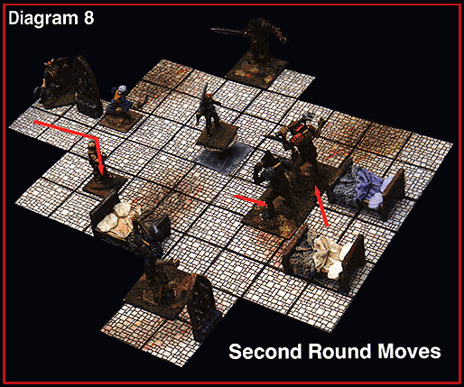

Round Two
The DM decides that the two bugbears on the flanks remain under cover this
round and guard. The bugbear engaging Pascal decides to take a half-move and
attack, looking to open the range and take advantage of its longer reach. The last
bugbear will move up to join the fight and engage Pascal. The players state
their actions:
Pascal: “I’ll stand my ground and attack.”
Lyssa: “I’m going to move into the room to find a place to cast my next spell.”
Damiar: “I’ll try and shoot at the bugbear hiding around the corner. Maybe
I’ll get lucky.”
Dain: “You guys are doing okay without me. I’ll keep covering this hallway.”
DM: “Roll initiative, everybody.”
The players win initiative again, rolling a 1. This accelerates their actions
by a phase. In the very fast phase, Lyssa moves into the room. This time,
Pascal’s average sword attack becomes a fast action, as does Damiar’s bow shot.
Pascal misses her bugbear, but Damiar rolls another 20!
This time, Damiar’s 20 is not a critical hit. The DM rules that the bugbear is
under 75% cover, so it has a 7-point bonus to its Armor Class, making it
effectively AC –2. Since Damiar’s adjusted THAC0 is a 16, he only hit by 2, and he
needed to hit by 5 to get another critical hit. The bugbear is wounded but still
has some fight left in it.
In the average phase, Damiar fires his second arrow but misses. Finally, the
bugbears can begin to move. The bugbear that is threatened by Pascal backs away,
provoking an attack of opportunity. Pascal rolls her free attack but misses.
The last bugbear closes to within two spaces. Since the bugbears are Large
creatures armed with weapons, they can still reach Pascal.
DM: “We’re up to slow actions, and the two bugbears fighting Pascal get to
make their attacks.” (Rolls two attacks.) “You’re lucky, they both missed. At the
end of the round, nobody has to retreat. Everybody keep track of how many
fatigue points you’ve used. Pascal, you used up two again this turn, due to your
attack of opportunity.”
Pascal: “Don’t the bugbears have to make another morale check?”
DM: “No, nothing’s changed since the last one.”
At this point, Pascal has 6 fatigue points left, Damiar 2, and Lyssa 3, while
Dain is still at his full amount, since he hasn’t moved or fought. The bugbears
attacking Pascal have 7 and 9, respectively, while the two taking cover still
have 10 each.

Table of Contents